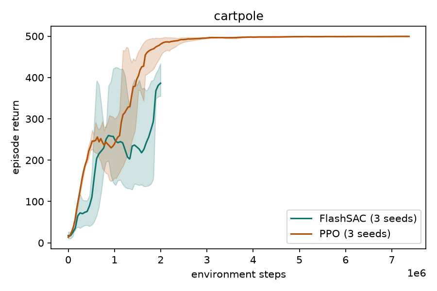
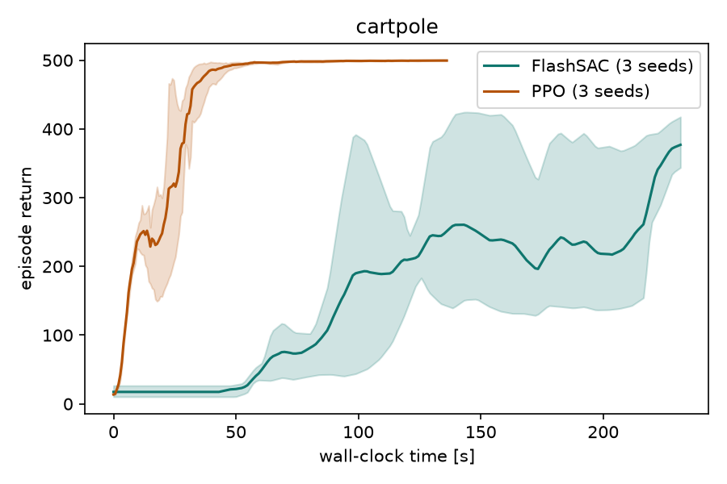
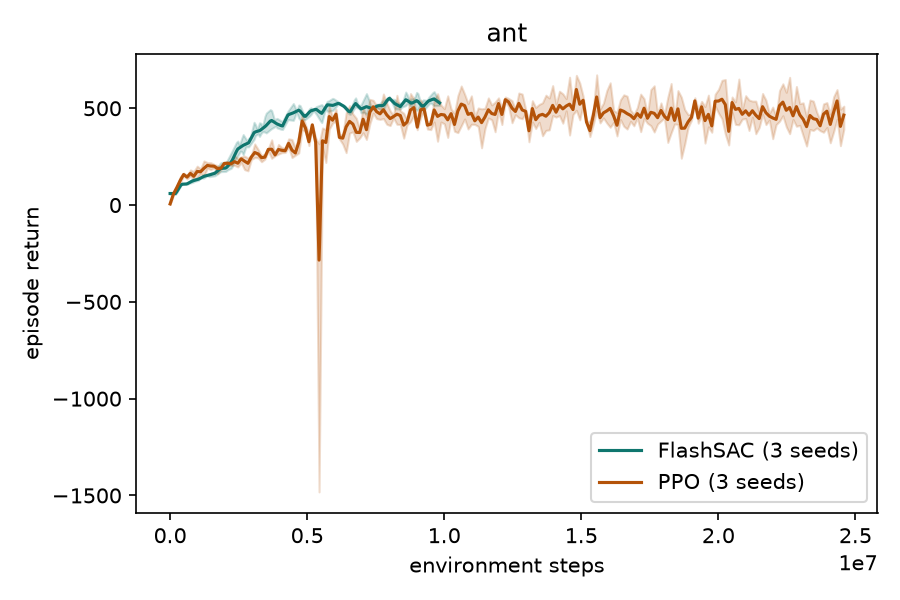
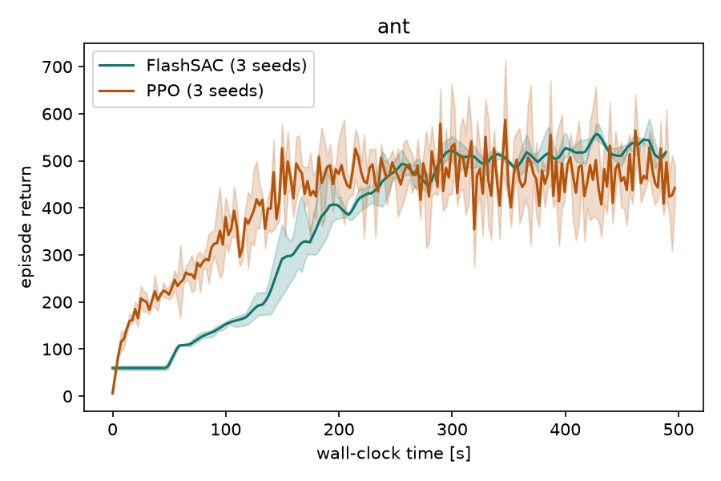
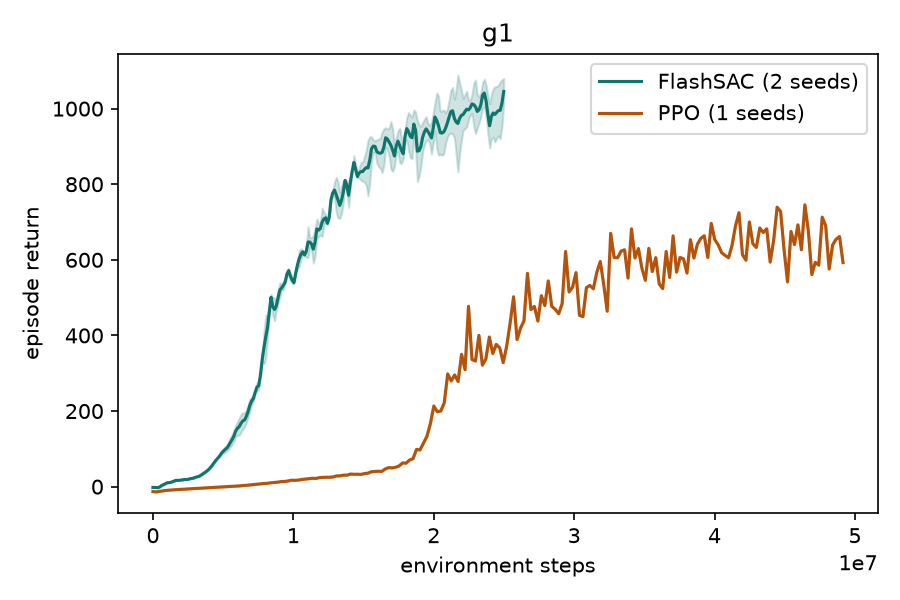
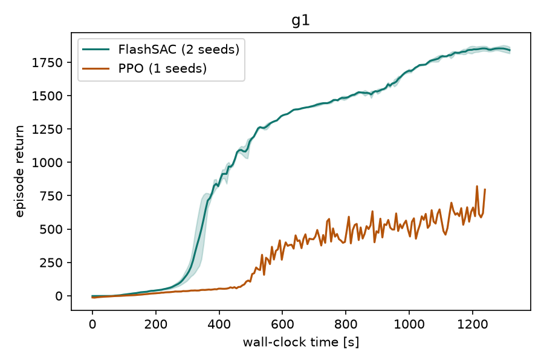
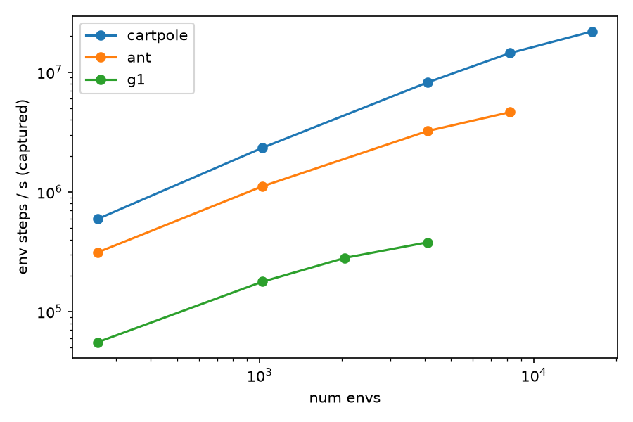

Newton reinforcement-learning report
Newton Gym: graph-captured RL environments for Newton
A suite of massively parallel, fully CUDA-graph-captured reinforcement-learning environments built on Newton, benchmarked with FlashSAC (off-policy) and PPO (on-policy) across cartpole balancing, ant locomotion, and G1 humanoid walking. Every environment step dispatches a single CUDA-graph launch: no host-device syncs, no Python overhead mid-step.
Eric Heiden · 2026-07-18 · 1× NVIDIA L40 (48 GB), driver 550.127 · Newton 1.5.0.dev0 · Warp 1.16.0.dev20260717 · PyTorch 2.6.0+cu124
Architecture: single-graph step pipeline
Task-as-kernels design
Each task (cartpole, ant, G1) is implemented as a set of Warp CUDA kernels for observation
extraction, reward computation, and done detection. These kernels share the same Newton physics
state (SolverMuJoCo body transforms, joint velocities, contact forces) and write
directly into pre-allocated GPU arrays that are part of the captured graph. Reward weights are
exposed as wp.array parameters, enabling live tuning between episodes without
breaking the captured graph — the graph operates on the underlying memory, not the Python
variable.
NaN self-heal path
A dedicated NaN-guard kernel runs after the task's terminated kernel and marks
environments whose joint positions contain NaN or exceed |q|>106, or whose joint
velocities contain NaN or exceed |q̇|>104, as terminated.
SolverMuJoCo.reset(world_mask) then clears MuJoCo's carried buffers
(qacc_warmstart, qfrc_applied, ctrl, act)
for those worlds, preventing corrupted state from contaminating subsequent solves. Sanitize
kernels then scrub reward, final observation, and observation tensors so no NaN reaches the
replay buffers, keeping a single unstable environment from corrupting the full batch
gradient.
Cartpole


| Algorithm | Seeds | Final return (mean) | Best return | Wall-clock |
|---|---|---|---|---|
| FlashSAC | 3 | 386.2 | 434.1 | 4.1 min |
| PPO | 3 | 499.6 | 499.8 | 2.3 min |
FlashSAC rollout — best return 434.1, final mean 386.2.
PPO rollout — best return 499.8, final mean 499.6.
Ant


| Algorithm | Seeds | Final return (mean) | Best return | Wall-clock |
|---|---|---|---|---|
| FlashSAC | 3 | 527.6 | 585.8 | 8.6 min |
| PPO | 3 | 464.6 | 672.6 | 8.4 min |
FlashSAC rollout — best return 585.8, final mean 527.6.
PPO rollout — best return 672.6, final mean 464.6.
G1 Locomotion


| Algorithm | Seeds | Final return (mean) | Best return | Wall-clock |
|---|---|---|---|---|
| FlashSAC | 2 | 1.0k | 1.1k | 21.7 min |
| PPO | 1 | 592.8 | 745.6 | 20.6 min |
FlashSAC rollout — best return 1.1k, final mean 1.0k.
PPO rollout — best return 745.6, final mean 592.8.
FlashSAC vs PPO
Wall-clock efficiency
On cartpole, PPO converges to near-ceiling in 2.3 min (best return 499.8, final mean 499.6). FlashSAC takes 4.1 min to reach final mean 386.2 (best 434.1). The off-policy overhead — experience replay, twin critics, target-network updates — dominates on this short-horizon task. PPO's on-policy batching over 1024 simultaneous envs is hard to beat when episodes are fast and sparse returns are not a concern.
Sample efficiency
FlashSAC shows stronger early learning per environment step on cartpole: it achieves high returns before 1M steps, while PPO requires the full batch budget. On ant (3 seeds each), FlashSAC achieved a best return of 585.8 versus PPO's 672.6, with FlashSAC requiring fewer environment steps to reach comparable performance despite the higher per-step overhead of the off-policy update.
G1 humanoid: off-policy scaling on high-dimensional control
On the highest-dimensional task — G1 with 43 actuated DoFs — FlashSAC clearly dominates: best return 1.1k (2 seeds) versus PPO's 745.6 (1 seed), reached with roughly half the environment steps (25M vs 49M) at comparable wall-clock (21.7 min vs 20.6 min). This is consistent with the FlashSAC paper's claim that off-policy experience replay confers the greatest advantage on high-dimensional control tasks, where sample efficiency matters most.
Caveats
- G1 budget-capped: G1 training ran for a fixed step budget on a single machine; the agent may not have converged.
- Single machine: all results are from one L40. Cross-machine variance is unknown.
- Training-env returns: episode returns are measured in the training environments, not in a separate evaluation environment with fixed seeds. Episode length and domain-randomization distributions may differ from a dedicated eval setting.
- Cartpole FlashSAC config: FlashSAC required 256 parallel environments (vs PPO's 1024) to avoid critic update starvation at the fixed 2M-step budget. With 1024 envs the replay buffer fills too slowly relative to batch size, giving fewer than 2k gradient updates — insufficient for this task.
Throughput Scaling

| Task | Peak env-steps/s |
|---|---|
| cartpole | 22M |
| ant | 4.6M |
| g1 | 379.0k |
Multi-GPU Design
Newton Gym is designed to scale across GPUs via standard PyTorch distributed training.
Each rank instantiates an independent Newton environment (its own NvGymEnv,
physics model, and captured CUDA graph) with a disjoint slice of parallel environments.
Policy gradients are synchronized across ranks with torch.distributed
all-reduce after each backward pass; the target critic weights are broadcast from rank 0
to keep target networks consistent.
- 2-rank
gloosmoke test on a single GPU (scripts/smoke_distributed.py) passes — verifies the distributed init, env construction, and tensor communication paths end-to-end. torchrun --nproc-per-node=1 scripts/train_ppo.pycompletes without error (world_size=1 PPO path exercised).
Reproduction
Repository layout
newton-gym/
newton_gym/ # library: tasks, envs, algorithms
tasks/ # cartpole.py, ant.py, g1.py (kernel-based tasks)
core/ # NvGymEnv, StepResult, randomize
algorithms/ # flashsac/, ppo_rsl.py, logging
compat/ # GymVectorWrapper
scripts/
train_flashsac.py # FlashSAC runner
train_ppo.py # PPO (rsl_rl) runner
benchmark.py # throughput sweep
record_rollout.py # rollout video recorder
make_plots.py # plot + summary generator
build_report.py # this script
run_matrix.sh # full experiment matrix
tests/ # unittest suite
runs/ # training outputs (gitignored)
bench_results/ # benchmark outputs (gitignored)
videos/ # rollout videos (gitignored)
report_assets/ # generated plots + summary (gitignored)
report_out/ # generated report (gitignored)
Commands
Install: uv sync inside the repo (requires CUDA 12.4, L40 or compatible GPU).
# Stage 1: cartpole training (FlashSAC + PPO, 3 seeds each) bash scripts/run_matrix.sh 1 # Stage 2: ant training (FlashSAC + PPO, 3 seeds each) bash scripts/run_matrix.sh 2 # Stage 3: G1 locomotion training bash scripts/run_matrix.sh 3 # Stage 4: throughput benchmark sweep bash scripts/run_matrix.sh 4 # Stage 5: record rollout videos bash scripts/run_matrix.sh 5 # Generate plots and results_summary.json uv run scripts/make_plots.py # Generate this report uv run scripts/build_report.py
All scripts accept --help for per-flag documentation.